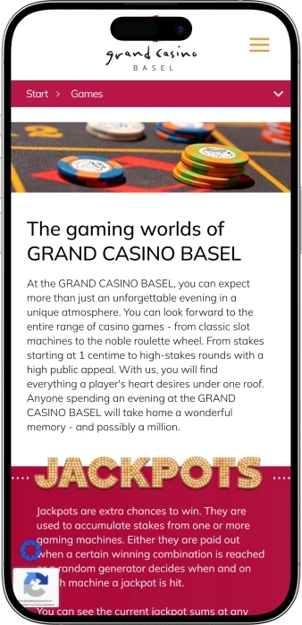
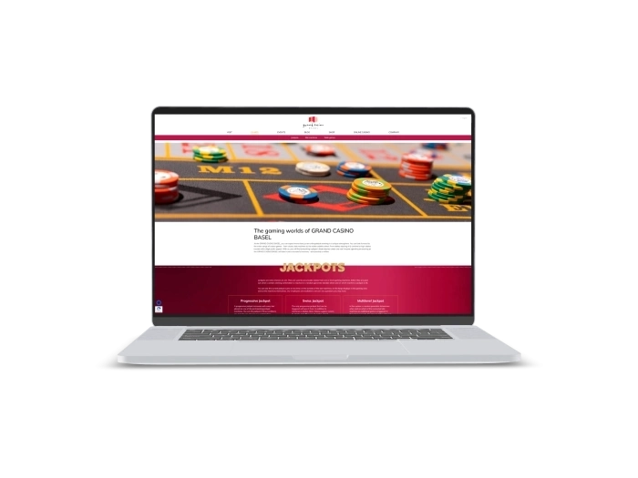

Exklusives Willkommensangebot von
Exklusives Willkommensangebot von
Grand Casino Basel – Casino-Unterhaltung, Gastronomie, Events und Gästeclub in Basel
Top-Casinos
Vorteile
-
Über 300 Slots und Videopoker täglich.
-
Klassische Tische: Roulette, Blackjack, Ultimate Hold’em.
-
Swiss Jackpot – Gewinne schon ab 1 CHF. [grandcasinobasel.com]
-
Ultimate Texas Hold’em an aktiven Live‑Tischen.
-
Täglich 10:00–05:00, Tische ab 16:00 geöffnet.
-
Gratis Eintritt und kostenlose Parkplätze für Gäste.
-
Direkt verbunden mit dem Airport Hotel Basel.
- Die Kombination aus grossem Spielangebot, langen Öffnungszeiten und direkter Hotelanbindung macht das Grand Casino Basel zur starken Wahl für Weekend‑Trips und für Jackpot‑Jäger wie auch Liebhaber klassischer Tischspiele.
Grand Casino Basel App



Über Grand Casino Basel
- Gewinn 5,6 Mio. CHF.
- Swiss Jackpot: 1 CHF.
- Zehn Swiss‑Jackpot‑Automaten vor Ort.
Das Grand Casino Basel ist ein modernes Casino im Dreiländereck. Es verbindet klassische Tischspiele mit vielfältigen Slots. Die Atmosphäre ist stilvoll und gastfreundlich für Einsteiger und Profis. Der Eintritt funktioniert unkompliziert, der Service ist aufmerksam. Vor Ort gibt es Bars und ein Restaurant mit internationaler Küche.

Das Casino ist direkt mit einem Hotel verbunden und erleichtert ein Casino‑Weekend. Gäste schätzen den lockeren Dresscode und bequeme Lounge‑Bereiche. Themenabende, Konzerte und spezielle Events sorgen für Abwechslung. Getrennte Bereiche für Nichtraucher und Raucher sind vorhanden. Es ist ein praktischer Ausgangspunkt für Unterhaltung im Grenzgebiet.
Grand Casino Basel: Elegante Atmosphäre, Spielbereiche, Bars und Öffnungszeiten
Im Grand Casino Basel verbinden wir klassische Casino-Eleganz mit moderner Unterhaltung, persönlichem Service und einem vielseitigen Angebot für Spiel, Genuss und Events. Unsere Gäste erleben über 310 Spielautomaten, Roulette, Blackjack, Ultimate Texas Hold’em, Poker, elektronische Spielformate und attraktive Jackpot-Systeme in einer stilvollen Umgebung. Die Spielbereiche sind täglich ab 11:00 geöffnet, während unsere Live Games täglich ab 15:00 für echtes Tischspiel-Flair sorgen. Von Sonntag bis Donnerstag bleibt unser Casino bis 04:00 geöffnet, am Freitag und Samstag bis 05:00. Wir gestalten den Besuch so, dass Gäste frei zwischen Slots, Live Games, Bar, Restaurant, Lounge und Entertainment wechseln können. Im PLÜ Restaurant & Lounge geniessen Gäste Lunch, Dinner, Sonntagsbrunch, saisonale Spezialitäten und besondere Dinnerformate mit Casino-Charakter. Unsere Bar- und Loungebereiche eignen sich perfekt für Aperitif, Drinks, Gespräche, Spielpausen und den stilvollen Ausklang eines Abends. Regelmässige Formate wie Spin 2 Win, Lotto, Ladies Special, Live Music, Afterwork, Dine & Dance, Comedy und Themenpartys bringen zusätzliche Energie in unser Haus. Für besondere Abende bieten wir Erlebnisangebote wie Dine & Gamble, Casino Deluxe und Entertainment Dinner an. Unser Grand Winners Club belohnt treue Gäste mit Coins, Level Points, Eintrittsvorteilen, Parkprivilegien, Gastronomie-Vorteilen, Eventeinladungen und exklusiven Services. Auf höheren Clubstufen erweitern wir das Erlebnis mit Prioritäten, Valet Parking, besonderen Einladungen und ausgewählten Premium-Vorteilen. Grand Casino Basel ist damit ein Ort für spontane Spielmomente, stilvolle Dinner, lange Casino-Abende und besondere Erlebnisse mit Freunden.
Grand Casino Basel: Service, Sprachen, Währung, Zahlungen und Gewinnauszahlung
Im Grand Casino Basel legen wir grossen Wert auf persönlichen Service, klare Abläufe und eine angenehme Begleitung vom Empfang bis zur Auszahlung. Unser Team begrüsst Gäste am Eingang, unterstützt bei der Registrierung, erklärt die Zutrittsregeln und hilft bei der Orientierung in den Spielbereichen, an der Kasse, in den Bars und im PLÜ Restaurant & Lounge. An den Live-Tischen begleiten unsere Croupiers das Spiel mit Professionalität, Ruhe und Aufmerksamkeit. Gäste erhalten verständliche Informationen zu Roulette, Blackjack, Ultimate Texas Hold’em, Poker, Einsätzen, Jetons, Tickets und Zusatzchancen. Neue Besucher profitieren von einer einfachen Einführung, während regelmässige Gäste den persönlichen und effizienten Service unseres Hauses schätzen. Wir möchten, dass jeder Besuch sicher, stilvoll und komfortabel beginnt.
Die wichtigste Servicesprache im Grand Casino Basel ist Deutsch, zusätzlich unterstützen wir Gäste gerne auf Englisch. Je nach Team und Bereich ist auch Kommunikation in weiteren europäischen Sprachen möglich. Am Empfang, an der Kasse, im Spielbereich, im Restaurant und in den Barbereichen achten wir auf klare Antworten und eine ruhige Beratung. Wer zum ersten Mal bei uns ist, erhält auf Wunsch eine einfache Orientierung zu Anmeldung, Grand Winners Karte, Spielbereichen, Ticket-System, Jetons und Kassenabläufen. Im PLÜ Restaurant & Lounge begleitet unser Team Gäste bei Reservationen, Menüfragen, Dinnerformaten und Gruppenanlässen. So gestalten wir den Besuch intuitiv, freundlich und serviceorientiert.
Unsere zentrale Währung ist CHF, und die Abläufe an Automaten, Live-Tischen, Kasse, Restaurant und Bar orientieren sich daran. Gäste nutzen Bargeld, Jetons, Automatentickets sowie die vor Ort verfügbaren Kassen- und Zahlungslösungen nach den gültigen Regeln. An den Spielautomaten kann ein Betrag eingesetzt, ein Spielguthaben genutzt und anschliessend ein Ticket ausgedruckt werden. Dieses Ticket kann an weiteren Automaten verwendet oder an der Kasse beziehungsweise an einem Rückwechselterminal eingelöst werden. Bei Fragen zu Karten, Limiten, grösseren Beträgen, Bargeldbezug, Währungswechsel oder Dokumenten begleitet unser Team die Gäste direkt vor Ort. Wir gestalten finanzielle Abläufe klar, korrekt und komfortabel.
Die Auszahlung von Gewinnen erfolgt je nach Spielart über Ticket, Jetons, Kasse oder eine gesonderte Abwicklung bei grösseren Gewinnsummen. Unser Personal erklärt, wie ein Automatenticket eingelöst wird, wie Jetons zurückgewechselt werden und welche Schritte bei höheren Auszahlungen notwendig sind. Für grössere Beträge können ein gültiger Ausweis, eine Identitätsprüfung und die üblichen Kassenprozesse erforderlich sein. In einem privaten Spielkontext sind Gewinne aus einem konzessionierten landbasierten Casino in der Regel steuerfrei. Besondere persönliche Situationen, berufsmässiges Spiel oder individuelle Steuerfragen hängen jedoch immer vom Einzelfall ab. Wir unterstützen Gäste vor Ort mit klarer Orientierung und diskretem Service.
Grand Casino Basel: Besuchsregeln, Dresscode, Zutritt und Anreise
Im Grand Casino Basel gestalten wir den Besuch stilvoll, sicher und komfortabel, damit Gäste Spiel, Gastronomie und Unterhaltung entspannt geniessen können. Der Zutritt zu den Spielbereichen ist ab 18 Jahren mit einem gültigen amtlichen Ausweis möglich. Beim ersten Besuch wird das Dokument gemäss den geltenden Casino-Regeln registriert. Wir empfehlen gepflegte Kleidung, die zur eleganten Atmosphäre unseres Hauses passt. Smart Casual, gepflegter Abendstil und ein sauberer, stimmiger Auftritt sind bei uns immer passend. Nicht geeignet sind Flip-Flops, Sportbekleidung, Badebekleidung, stark verschmutzte Kleidung oder sehr informelle Outfits. Kopfbedeckungen sind möglich, sofern die Identifikation des Gastes jederzeit gewährleistet bleibt. Grössere Taschen, Mäntel, Schirme und sperrige Gegenstände werden bequem an der Garderobe abgegeben. Für Sicherheit und Komfort gelten klare Regeln zu mitgebrachten Gegenständen und zum Verhalten im Spielbereich. Gäste erreichen uns bequem zu Fuss vom Bahnhof, mit dem Auto, mit dem Taxi oder über unseren Valet Parking Service am Abend. Für Autofahrer stehen Parkmöglichkeiten und praktische Vorteile im Rahmen des Grand Winners Club zur Verfügung. Wir möchten, dass jeder Besuch klar vorbereitet, angenehm begleitet und stilvoll erlebt wird.
Zutritt zum Grand Casino Basel
- • Der Zutritt ist ab 18 Jahren mit gültigem amtlichem Ausweis möglich.
- • Anerkannte Dokumente sind unter anderem Pass, Identitätskarte, Führerausweis oder ein offizieller Aufenthaltsausweis.
- • Beim ersten Besuch wird das Dokument nach den geltenden Vorgaben registriert.
- • Der reguläre Eintritt beträgt CHF 10; Grand Winners Gäste ab Silver profitieren von Eintrittsvorteilen für sich und eine Begleitperson.
- • Mit der Grand Winners Karte wird der Zugang besonders komfortabel und mit Clubvorteilen verbunden.
Dresscode im Grand Casino Basel
- • Wir begrüssen gepflegte Kleidung, Smart Casual und einen stilvollen Auftritt.
- • Das Outfit sollte zu Casino, Bar, Restaurant und Abendunterhaltung passen.
- • Flip-Flops, Sportbekleidung, Badebekleidung, sehr kurze Shorts und verschmutzte Kleidung sind nicht geeignet.
- • Kopfbedeckungen sind erlaubt, wenn die Identifikation des Gastes möglich bleibt.
- • Mäntel, Schirme, grosse Taschen und sperrige Gegenstände werden an der Garderobe abgegeben.
Sicherheit und Hausregeln
- • Wir schaffen eine sichere Atmosphäre für Spiel, Genuss und Begegnung.
- • Waffen oder gefährliche Gegenstände dürfen nicht mitgeführt werden.
- • Stark alkoholisierte Gäste erhalten keinen Zutritt, damit der Komfort aller Besucher erhalten bleibt.
- • Tiere sind nicht zugelassen; ausgenommen sind offiziell ausgewiesene Assistenzhunde.
- • In allen Spielbereichen gelten die jeweiligen Spielregeln und die Hinweise unseres Personals.
Parkieren und Anreise
- • Vom Bahnhof aus ist Grand Casino Basel bequem zu Fuss erreichbar.
- • Mit dem Auto ist die Anreise komfortabel, und in der Umgebung stehen Parkmöglichkeiten zur Verfügung.
- • Gästen stehen praktische Parkplätze für einen entspannten Start in den Abend zur Verfügung.
- • Der Valet Parking Service ist täglich ab 19:00 verfügbar.
- • Grand Winners Gäste erhalten je nach Stufe Vergünstigungen oder kostenlose Park- und Valet-Vorteile.
Grand Casino Basel: Grand Winners Club mit Levels, Coins und exklusiven Vorteilen
Grand Winners ist unser Clubprogramm für Gäste, die ihren Besuch im Grand Casino Basel mit zusätzlichen Vorteilen verbinden möchten. Die Teilnahme ist kostenlos und eröffnet Zugang zu Coins, Level Points, Geschenken, Eintrittsvorteilen, Parkservices, Gastronomie-Privilegien und Eventeinladungen. Unser System ist einfach aufgebaut: Level Points bestimmen die Clubstufe, Coins können für ausgewählte Leistungen und Vorteile genutzt werden. Gäste sammeln Punkte beim Spiel an Automaten, elektronischen Spielstationen, Live-Tischen und Pokerformaten. Zusätzlich sammeln Mitglieder Coins im PLÜ Restaurant & Lounge, in der Bar, im Club COCO sowie bei Seminaren und Events. Die Registrierung erfolgt direkt am Empfang mit einem gültigen Ausweis. Neue Mitglieder erhalten ein Willkommensgeschenk und können die Clubkarte sofort verwenden. Grand Winners umfasst die Stufen Member, Silver, Gold, Diamond, Diamond Millionaire und Black Circle. Je höher die Stufe, desto stärker werden Coin-Multiplikator, Eintrittsvorteile, Parkleistungen, Prioritäten und persönliche Services. Besonders aktive Gäste profitieren von kostenlosem Eintritt mit Begleitung, Slot-Reservierung, Priorität bei Tischspielen, Geburtstagsgeschenken, Gastronomie-Vorteilen und exklusiven Einladungen. Mit Grand Winners machen wir jeden Besuch wertvoller, persönlicher und komfortabler. Die Clubkarte ist damit der Schlüssel zu einem erweiterten Erlebnis im Grand Casino Basel.
Registrierung im Grand Winners Club
- • Die Mitgliedschaft ist kostenlos und wird direkt am Empfang im Grand Casino Basel erstellt.
- • Teilnehmen können Gäste ab 18 Jahren mit gültigem amtlichem Ausweis.
- • Neue Mitglieder erhalten ein Willkommensgeschenk.
- • Nach der Registrierung können Coins und Level Points sofort gesammelt werden.
- • Für die Gutschrift sollte die Grand Winners Karte vor dem Spiel oder vor der Zahlung vorgelegt werden.
Coins und Level Points sammeln
- • Spielautomaten: CHF 1 Einsatz = 1 Level Point und 1 Coin.
- • Elektronisches Blackjack und Roulette: CHF 2 Einsatz = 1 Level Point und 1 Coin.
- • Live Roulette, Blackjack und Ultimate Texas Hold’em: Gutschrift nach Spieldauer und durchschnittlichem Einsatz.
- • Poker: Gutschrift je nach Spielart und Spielzeit.
- • PLÜ Restaurant & Lounge, Bar und Club COCO: pro CHF Umsatz werden 20 Coins gutgeschrieben.
- • Seminare und Events: pro CHF Umsatz werden 20 Coins gutgeschrieben.
- • Silver sammelt Coins mit Faktor 1.2x.
- • Gold sammelt Coins mit Faktor 1.3x.
- • Diamond und Black Circle sammeln Coins mit Faktor 1.4x.
Clubstufen und Voraussetzungen
- • Member: Startstufe direkt nach der kostenlosen Registrierung.
- • Silver: ab 15 000 Level Points pro Kalenderjahr.
- • Gold: ab 65 000 Level Points pro Kalenderjahr.
- • Diamond: ab 250 000 Level Points pro Kalenderjahr.
- • Diamond Millionaire: ab 1 000 000 Level Points pro Kalenderjahr.
- • Black Circle: persönliche Einladung für besonders exklusive Betreuung.
Vorteile und Bonusleistungen
- • Willkommensgeschenk für neue Mitglieder direkt bei der Registrierung.
- • Eintritt mit Coins für Member nach aktuellem Clubmodell.
- • Kostenloser Eintritt ab Silver für Mitglied und Begleitperson.
- • Valet Parking mit Vorteilen je nach Level bis hin zum kostenlosen Service auf höheren Stufen.
- • Parkvorteile je nach Stufe bis hin zu kostenlosem Parkieren.
- • Gastronomie-Vorteile im PLÜ Restaurant & Lounge und Nutzung von Coins für ausgewählte Angebote.
- • Geburtstagsgeschenk mit Spielvorteilen und doppelten Coins in besonderen Geburtstagsmomenten.
- • Einladungen zu Turnieren, Club-Events und besonderen Abenden.
- • Slot-Reservierung je nach Clubstufe für komfortable Spielpausen.
- • Priorität auf Wartelisten für Tischspiele ab Diamond.
- • Zugang zu ausgewählten Partys und Events mit Begleitung auf höheren Stufen.
- • Black Circle mit zusätzlichen Hotelvorteilen, Limousinenservice und persönlicher Betreuung.
Softwareanbieter
Grand Casino Basel: Jackpots, Spielangebote, Spezialformate und saisonale Erlebnisse
Im Grand Casino Basel erweitern wir das Casino-Erlebnis mit Jackpots, Spezialangeboten, Turnieren, Dinner-Formaten, Shows und saisonalen Events. Unsere Gäste finden neben dem Grand Winners Club viele zusätzliche Möglichkeiten, den Besuch mit Spielspannung und Unterhaltung zu verbinden. An den Spielautomaten stehen unterschiedliche Jackpot-Systeme wie Basel Jackpot, Lions Jackpot, Lucky 14, Penny Jackpot, Goldenlink und progressive Multilevel-Formate zur Verfügung. Einzelne Jackpot-Systeme beginnen bereits ab CHF 0.01, CHF 0.02, CHF 0.05 oder CHF 0.50 Mindesteinsatz. In der Geschichte des Grand Casino Basel wurden grosse Jackpot-Gewinne mit Beträgen von über CHF 4 900 000 erzielt. Auch an den Live-Tischen bieten Zusatzchancen wie Swiss Jack beim Blackjack oder der Progressive Jackpot bei Ultimate Texas Hold’em zusätzliche Spannung. Für Gäste mit Turnierlust veranstalten wir dynamische Spiel- und Wettbewerbsformate wie Spin 2 Win und Pokerturniere. Genussangebote wie Dine & Gamble ab CHF 89 oder Casino Deluxe ab CHF 275 pro Person verbinden Menü, Eintritt, Spielguthaben und besondere Abendmomente. Unser Veranstaltungskalender umfasst Comedy, Lotto, Quiz Dinner, Spin 2 Win, Dine & Dance, Live Music und saisonale Genussanlässe. Themenpartys und Clubformate schaffen ein lebendiges Nachtgefühl nach dem Spiel oder Dinner. Wir gestalten diese Angebote so, dass jeder Besuch eine neue Gelegenheit für Spannung, Genuss und Begegnung bietet. Grand Casino Basel verbindet damit Casino, Jackpot-Erlebnis, Gastronomie und Entertainment zu einem vielseitigen Abendprogramm.
Spielboni und Jackpot-Chancen
- • Basel Jackpot: Jackpot-System auf ausgewählten Automaten mit Teilnahme ab niedrigen Einsätzen.
- • Lions Jackpot: progressives Slot-Format mit Teilnahme ab CHF 0.02.
- • Lucky 14: Jackpot auf 14 Automaten mit Mindesteinsatz ab CHF 0.50.
- • Penny Jackpot: Einstieg ab CHF 0.01 und regelmässige Jackpot-Dynamik.
- • Goldenlink: Jackpot-Format mit progressivem Gewinnpotenzial.
- • Lion Link Jackpot: Multilevel Progressive Jackpot auf thematischen Automaten.
- • UTH Progressive Jackpot: Zusatzchance bei Ultimate Texas Hold’em.
- • Swiss Jack beim Blackjack: Zusatzchance mit Auszahlung bis 300x.
- • Grosse Gewinnbeispiele: Jackpot-Historie mit Beträgen von über CHF 4 900 000.
- • Multilevel Slots: Cash Connection, Thunder Cash, Fu Lai Cai Lai und Clover Link Xtreme mit mehreren Gewinnstufen.
Spezialangebote mit Spiel und Gastronomie
- • Dine & Gamble ab CHF 89: Menü, Casino-Eintritt und Spielguthaben in einem Paket.
- • Casino Deluxe ab CHF 275 pro Person: Limousinenfahrt, 5-Gang-Menü, Champagnerglas und Casino-Eintritt.
- • Entertainment Dinner: Dinner, Show, Spielgefühl und interaktive Unterhaltung.
- • Dinner for Winner: kulinarischer Abend mit Casino-Flair.
- • Dine & Dance: Dinner und Tanzatmosphäre für einen langen Abend.
- • La Grande Grillade: saisonales Grill-Erlebnis mit geselligem Charakter.
- • Quiz Dinner: Dinner mit Fragen, Teamgeist und spielerischer Dynamik.
- • Tomahawk Special im PLÜ: kräftiger Genussmoment für Fleischliebhaber.
Turniere, Aktionen und saisonale Events
- • Spin 2 Win Tournament: regelmässiges Turnierformat mit Slot-Dynamik.
- • Sonntagslotto: beliebtes Sonntagsformat mit Spiel- und Gewinnmomenten.
- • Nachmittagslotto: entspannte Lotto-Unterhaltung am Nachmittag.
- • Ladies Special: thematischer Besuchsanlass mit besonderer Atmosphäre.
- • Basel Lacht: Comedy-Abend mit mehreren Künstlern und starker Bühnenenergie.
- • Live Music & Afterwork: Musik, Bar, Begegnung und entspannte Abendstimmung.
- • Club COCO Events: Partys, DJ-Nights, Livemusik, Shows und Nightlife-Atmosphäre.
- • Saisonale Genussanlässe: Grillabende, Feiertagsformate und thematische Dinner.
Grand Casino Basel: Beliebte Spiele, Slots, Roulette, Blackjack und Poker
Im Grand Casino Basel bieten wir eine vielseitige Spielauswahl, die klassische Casino-Tradition mit modernen elektronischen Formaten verbindet. Unsere Gäste erleben über 310 Spielautomaten, progressive Jackpots, Live Roulette, Blackjack, Ultimate Texas Hold’em, elektronische Roulette-Stationen und Pokerformate nach aktuellem Kalender. Wir gestalten das Spielangebot so, dass unterschiedliche Spielstile Platz finden: schnelle Slots, ruhiges elektronisches Roulette, atmosphärische Live-Tische oder strategische Pokerentscheidungen. Spielautomaten sind besonders beliebt, weil sie Themenvielfalt, Bonusfunktionen, Jackpot-Systeme und flexible Einsätze kombinieren. Roulette bleibt ein Klassiker unseres Hauses, weil Rad, Jetons, Tischatmosphäre und einfache Regeln ein starkes Casino-Gefühl schaffen. Blackjack begeistert Gäste, die klare Regeln, Entscheidungen pro Hand und das Ziel 21 schätzen. Ultimate Texas Hold’em bringt Poker-Flair an den Tisch, ohne dass Gäste direkt gegeneinander spielen. Elektronische Spielformate eignen sich für Besucher, die im eigenen Tempo spielen möchten. Poker-Sessions und Turniere sprechen Gäste an, die Buy-in, Stack, Position und Wettbewerb lieben. Unser Team begleitet die Spiele professionell und erklärt auf Wunsch Regeln, Einsätze, Tickets, Jetons und Zusatzchancen. So kann ein Abend bei uns mit einem Slot beginnen, am Roulette-Tisch weitergehen und mit Blackjack, Poker, Dinner oder Musik ausklingen. Grand Casino Basel ist damit sowohl für Einsteiger als auch für erfahrene Casinogäste attraktiv.
Spielautomaten
- • Über 310 Slots mit klassischen, Video- und Themenautomaten.
- • Progressive Jackpots wie Basel Jackpot, Lions Jackpot, Lucky 14, Penny Jackpot und Goldenlink.
- • Mindesteinsätze ab CHF 0.01 bei ausgewählten Automaten und Jackpot-Systemen.
- • Ticket-System zur Nutzung an weiteren Automaten oder zum Einlösen an der Kasse.
- • Multilevel-Spiele wie Cash Connection, Thunder Cash, Fu Lai Cai Lai und Clover Link Xtreme.
Roulette
- • Live Roulette mit Croupier, Kessel, Jetons und klassischer Tischatmosphäre.
- • Einsätze ab CHF 2 im Tagesformat; am Abend und am Wochenende können andere Limiten gelten.
- • Breite Auswahl an Chancen, Zahlen, Kombinationen und einfachen Chancen.
- • Elektronische Roulette-Formate mit komfortablem individuellem Spieltempo.
- • Geeignet für neue Gäste und erfahrene Spieler, die klare Regeln und flexible Einsätze schätzen.
Blackjack
- • Klassisches Ziel 21 mit Entscheidungen pro Hand.
- • Blackjack wird im klassischen Verhältnis 3:2 ausbezahlt.
- • Gespielt wird mit mehreren Kartendecks.
- • Swiss Jack als Zusatzchance mit Auszahlungen bis 300x.
- • Verschiedene Box-Limiten ermöglichen eine passende Einsatzwahl.
Ultimate Texas Hold’em
- • Poker-Variante gegen den Dealer statt gegen andere Gäste.
- • Frühere Spielentscheidungen ermöglichen höhere Play-Einsätze.
- • Trips Bonus für Kombinationen ab Drilling.
- • Progressive Jackpot als zusätzliche Gewinnchance.
- • Envy Bonus bei bestimmten progressiven Gewinnsituationen anderer Spieler.
Poker
- • Cash Games mit strategischer Live-Atmosphäre.
- • No Limit 5/5 mit Buy-in ab CHF 200 bis CHF 1 000.
- • No Limit 5/10 mit Buy-in ab CHF 400 bis CHF 2 000.
- • Turnierformate wie Texas Hold’em und Omaha nach aktuellem Kalender.
- • Beispielhafte Turnier-Buy-ins von CHF 99, CHF 170 und CHF 333 je nach Format.
Grand Casino Basel: Mindest- und Höchsteinsätze nach Spielen
Im Grand Casino Basel wählen Gäste zwischen niedrigen Einstiegseinsätzen, klassischen Tischlimiten und grösseren Spielformaten. Unsere Einsatzstruktur reicht von Slots ab CHF 0.01 bis zu Live-Tischen mit deutlich höheren Limiten je nach Spiel, Chance und Tischkategorie. Die aktuellen Limiten sind direkt am Spieltisch oder im jeweiligen Spielformat ersichtlich, und unser Team unterstützt gerne bei der passenden Auswahl. Die folgende Übersicht zeigt wichtige Orientierungswerte für beliebte Spiele und Bereiche.
Grand Casino Basel: Events, Shows, Partys und Unterhaltung
Grand Casino Basel ist nicht nur ein Ort für Spielautomaten und Live-Tische, sondern auch eine vielseitige Bühne für Abendunterhaltung. Wir verbinden Casino Night, Gastronomie, Musik, Comedy, Spielturniere, Themenpartys und gesellige Begegnungen in einem stilvollen Umfeld. Regelmässige Formate wie Lotto, Spin 2 Win, Ladies Special, Pokerturniere, Afterwork, Live Music, Dine & Dance, Quiz Dinner und saisonale Genussabende machen unseren Kalender lebendig. Gäste wählen je nach Stimmung zwischen entspanntem Afterwork-Drink, Dinner mit Show, Turnierabend, Tanznacht oder langem Wochenendevent.
Ein besonderer Bestandteil unserer Unterhaltung ist die Club- und Musikstimmung. COCO Basel ergänzt unser Casino-Erlebnis mit Partys, Livemusik, Shows, privaten Feiern, Firmenevents und Clubformaten. Henry’s Live Music & Sport Bar bringt Afterwork, Barstimmung, Sportmomente und Live Music in den Abend. Viele Gäste starten im PLÜ Restaurant & Lounge, wechseln danach an Roulette oder Blackjack und lassen den Abend später mit Musik, Drinks und Tanz ausklingen. Für Gruppen ist das besonders attraktiv, weil Spiel, Dinner, Bar und Nightlife an einem Ort zusammenkommen.
Unsere Events werden durch kulinarische Formate ergänzt. Dine & Gamble, Casino Deluxe, Entertainment Dinner, Dinner for Winner, Dine & Dance, Quiz Dinner und La Grande Grillade machen aus einem Abendessen ein komplettes Erlebnis. Wir achten auf Menü, Getränke, Atmosphäre, Service und den passenden Rhythmus des Abends. So entsteht ein Besuch, der über ein klassisches Dinner hinausgeht und Casino-Flair mit Genuss verbindet.
Comedy-Abende, saisonale Specials, Themenpartys und Turniere bringen zusätzliche Dynamik in das Jahr. Basel Lacht sorgt für Bühnenenergie, Lotto schafft ein beliebtes regelmässiges Ritual und Spin 2 Win bringt sportlichen Wettbewerb ins Spiel. Wir aktualisieren unser Programm laufend, damit Gäste immer wieder neue Anlässe für einen Besuch im Grand Casino Basel finden. Jedes Event bleibt dabei unserem Stil treu: elegant, lebendig, gastfreundlich und voller Spannung.
Unterhaltung im Grand Casino Basel
- • Live Music: Auftritte für Afterwork, Barstimmung und entspannte Abendmomente.
- • Afterwork: Drinks, Musik, Begegnung und lockeres Casino-Flair nach dem Arbeitstag.
- • Dine & Dance: Dinner mit anschliessender Tanzatmosphäre.
- • Entertainment Dinner: Essen, Show, Interaktion und Abendprogramm in einem Format.
- • Dinner for Winner: kulinarischer Abend mit Spielgefühl und Gewinnerstimmung.
- • Quiz Dinner: Dinner mit Fragen, Teams und spielerischem Wettbewerb.
- • La Grande Grillade: saisonales Grill-Erlebnis mit geselligem Charakter.
- • Basel Lacht: Comedy-Event mit mehreren Künstlern und starker Bühnenpräsenz.
- • Sonntagslotto: regelmässige Lotto-Unterhaltung mit Gewinnmomenten.
- • Nachmittagslotto: Lotto-Format für Gäste, die den Nachmittag bevorzugen.
- • Spin 2 Win Tournament: dynamisches Turnier mit Slot-Spannung.
- • Ladies Special: thematischer Anlass für einen stilvollen Besuch.
- • COCO Basel: Partys, Livemusik, Shows, private Feiern und Firmenevents.
- • Clubabende und DJ-Partys: Nightlife-Atmosphäre für lange Casino-Abende.
- • 80s- und 90s-Partys: Musikklassiker, Tanzfläche und nostalgische Energie.
- • Latin Social Club: Salsa, Bachata und Social Dancing.
- • House of Bachata: Tanzformat mit Bachata-Rhythmus und Abendstimmung.
- • Urban Golf: spielerisches Gruppenerlebnis mit lockerem Charakter.
- • Pokerturniere: Texas Hold’em und Omaha für Gäste mit strategischem Spielinteresse.
Grand Casino Basel: Bars, Restaurants, Hotelvorteile und Genussmomente
Grand Casino Basel bietet ein vollständiges Abenderlebnis, bei dem Spiel, Bar, Restaurant, Clubatmosphäre und Erholung natürlich ineinanderfliessen. Unsere Gäste besuchen nicht nur Spielbereiche, sondern auch kulinarische Orte, an denen ein Lunch, ein Dinner, ein Lounge-Moment oder ein Treffen vor dem Spiel beginnt. Im Mittelpunkt steht das PLÜ Restaurant & Lounge mit feiner Küche, sorgfältiger Präsentation, À-la-carte-Angebot, saisonalen Spezialitäten und Sonntagsbrunch. Der Name PLÜ steht für die Idee von etwas mehr: mehr Geschmack, mehr Aufmerksamkeit, mehr Atmosphäre und mehr Anlass, den Abend bei uns zu verbringen.
Im Grand Casino Basel lassen sich Restaurant und Spiel bequem verbinden. Dine & Gamble ab CHF 89 kombiniert Menü, Casino-Eintritt und Spielguthaben zu einem fertigen Abendformat. Casino Deluxe ab CHF 275 pro Person ergänzt das Dinner mit Limousine, Champagnerglas, 5-Gang-Menü und besonderem Anlassgefühl. Wer einen freien Ablauf bevorzugt, nutzt unsere Barbereiche für Drinks, Gespräche, Sportmomente oder einen stimmungsvollen Abschluss nach den Live-Tischen. So entsteht ein Abend, der kulinarisch beginnt und mit Roulette, Blackjack, Slots, Poker, Musik oder Drinks weitergehen kann.
Unsere Bars und Lounge-Zonen tragen wesentlich zur Casino-Night-Stimmung bei. Gäste pausieren zwischen Slots und Roulette, treffen sich vor dem Dinner, geniessen einen Cocktail nach einem Gewinn oder wechseln später zu Live Music und Afterwork-Atmosphäre. Sportbar, Henry’s Live Music & Sport Bar, Bugsy und COCO Basel ergänzen die Spielzonen mit unterschiedlichen Erlebnissen. So entstehen Varianten für Casual Drinks, Musik, Tanz, Gespräche, Gruppenabende und stilvolle Pausen.
Hotelvorteile sind über höhere Grand Winners Stufen verfügbar, insbesondere im Black Circle mit kostenlosen Hotelnächten und zusätzlichem persönlichem Service. Ergänzt wird das Erlebnis durch Valet Parking, Limousinenformate, Eintrittsvorteile, Restaurantprivilegien und Services für besondere Anlässe. Gäste können ihren Besuch als kurzen Drink-and-Play-Moment, als kompletten Dinner-&-Casino-Abend oder als festlichen Abend mit Show, Club und Gastronomie planen. Im Grand Casino Basel gestalten wir Erholung so, dass Gäste sich in jeder Phase willkommen, sicher und stilvoll fühlen.
Genuss- und Aufenthaltsorte im Grand Casino Basel
- • PLÜ Restaurant & Lounge: zentrale Gastronomie mit À-la-carte-Menü, saisonalen Gerichten, Lounge-Charakter und Dinner vor dem Spiel.
- • Sonntagsbrunch im PLÜ: reichhaltiger Brunch mit warmen Speisen, Eierspeisen, Desserts und entspanntem Start in den Tag.
- • Dine & Gamble: Paket ab CHF 89 mit Menü, Casino-Eintritt und Spielguthaben.
- • Casino Deluxe: Premiumformat ab CHF 275 pro Person mit Limousine, 5-Gang-Menü, Champagnerglas und Casino-Eintritt.
- • Entertainment Dinner: Dinner mit Show, Unterhaltung und Casino-Flair.
- • Dine & Dance: Restaurantabend mit anschliessender Tanz- und Musikstimmung.
- • La Grande Grillade: saisonales Grillformat für Genuss, Begegnung und Abendatmosphäre.
- • Tomahawk Special: kräftiger Genussakzent im PLÜ für ein ausdrucksstarkes Dinner.
- • Casino Bar: Barbereich für Cocktails, Treffen, Spielpausen und den Ausklang des Abends.
- • Sportbar: Ort für Drinks, Sportmomente, Gespräche und entspannte Casino-Stimmung.
- • Henry’s Live Music & Sport Bar: Afterwork, Live Music, Sport und Abendenergie.
- • Bugsy: atmosphärischer Barpunkt für Drinks und leichte Erholung rund um das Spiel.
- • COCO Basel: Club- und Eventlocation für Partys, Livemusik, Shows, private Feiern und Nightlife-Feeling.
- • Hotelvorteile für Grand Winners: kostenlose Hotelnächte und erweiterte Privilegien auf höchster Clubstufe.
- • Valet Parking: täglicher Abendservice ab 19:00 für eine komfortable Ankunft.
- • Limousinen-Erlebnis: Format für besondere Anlässe mit Transfer, Dinner und Casino-Abend.
FAQ
GRAND WINNERS Mitglieder können ausgewählte Vorteile, Promotionen und Gästeclub-Vorteile erhalten.
Ja, jackpots.ch ist das offizielle Online-Casino von Grand Casino Basel.
jackpots.ch wurde im Juli 2019 als erstes legales Online-Casino der Schweiz gestartet.
Ja, unser Casino stellt eine Datenschutzerklärung bereit, die Gäste über die Verarbeitung und Nutzung personenbezogener Daten informiert.